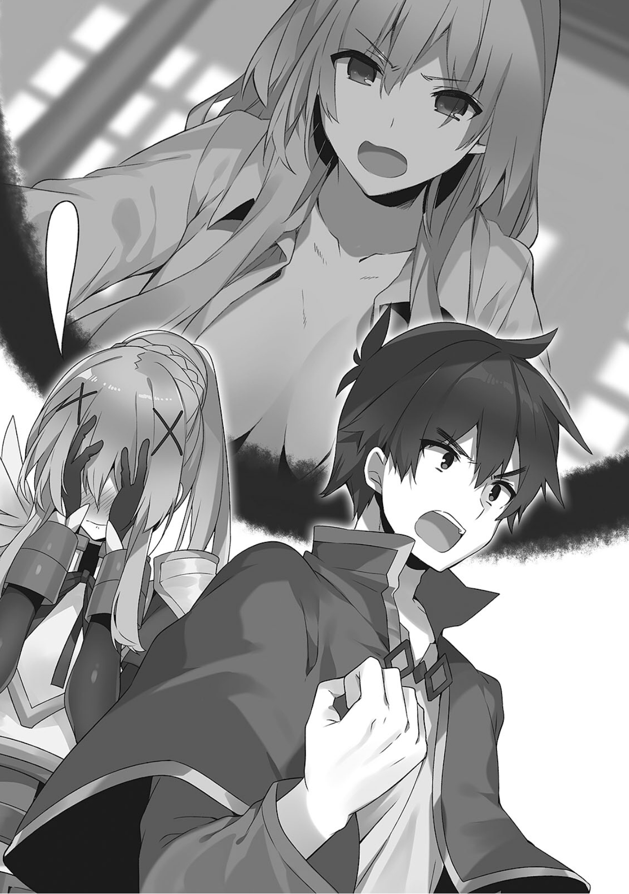
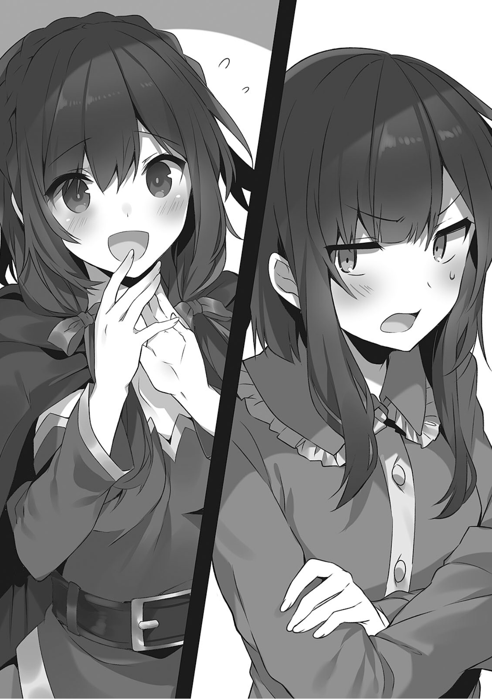
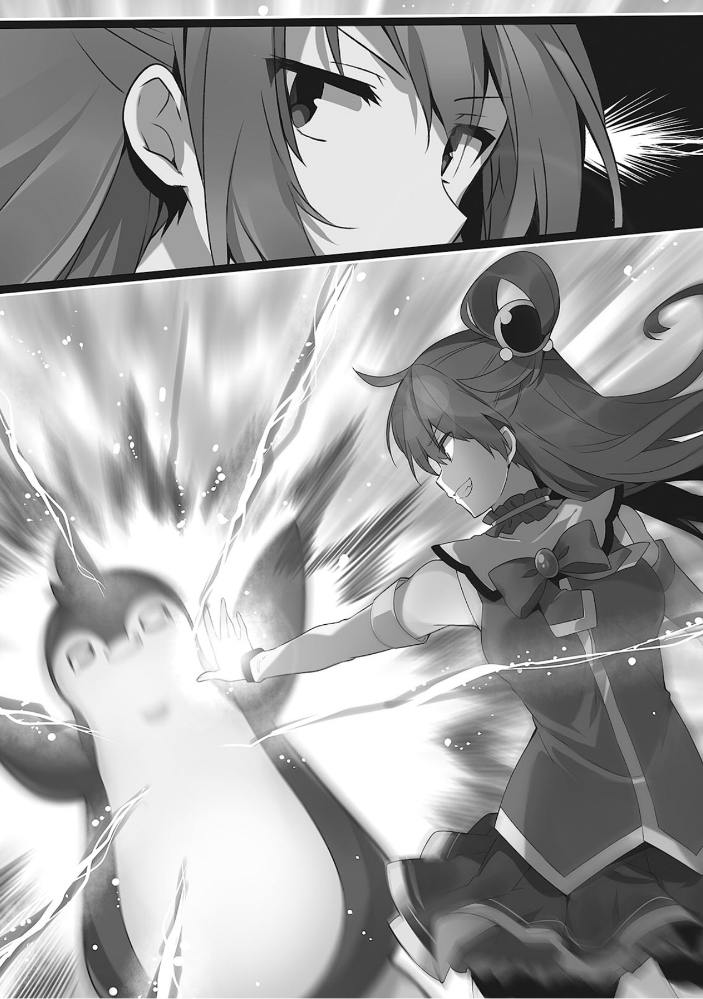

1
冒险者公会中响起了一声粗犷的喊声。
「妈妈！」
「身为贵族岂能被他们看扁了！你们有种别动！看我不弄死你们！」
满脸通红的达克尼斯握拳揍向了大声叫她妈妈的男性冒险者。
冒险者轻易躲开了她的拳头并不知悔改地接着说。
「妈妈，为什么要生气！我肚子饿了妈妈！我要吃奶奶嘎嘎！」
但那个男人在一边戏弄达克尼斯一边企图逃跑的途中被达克尼斯揪住了领口，发出了被掐脖子的鸡一样的声音。
怒发冲冠头冒青筋的达克尼斯终于抓出了那个冒险者，因此面露喜色。
正在这时。
「我说达克尼斯，在宴会会场乱来可是违反礼仪的啊？你看看在场各位这开心的表情。不懂得看气氛可是不行的哦？」
听到阿库娅淡定的一番话，达克尼斯放开叫自己妈妈的冒险者跪倒在了地上。
「没，没想到我竟然会有被阿库娅告诫要懂得看气氛的一天……」
这时一个女性冒险者带着坏笑靠近了大受打击的达克尼斯。
「妈妈！我也帮忙收集了药材，我也要喝……好痛痛痛痛！」
她正想要戏弄达克尼斯就被达克尼斯捏住了胸发出了惨叫。
「奶子你不是自己有一双的吗！我就用我这一身力气帮你挤一点出来！」
「住手，拉拉蒂娜你别这样！胸要被捏爆了！」
——达克尼斯的女儿……其实是她表妹的谢菲娜之前病倒了，众人四处奔走为她筹集来了药材。
药效非常显著，她很快便康复到了能和我们一起出去野餐的程度，并且现在还每天都从达克尼斯家去上学。
谢菲娜说想要向各位冒险者道谢。
看到被达克尼斯带来冒险者公会的谢菲娜，一个冒险者嚷嚷着『可喜可贺』喝起了啤酒，那就是这场骚动的开端。
「这里还有小孩子，别奶子奶子地喊！没看我家惠惠都不高兴了吗，奶子的话题就到此为止了啊！」
「就阿库娅你说得最多好吗！而且我也没有不高兴，不要说得好像我对胸有什么自卑感一样！」
公会瞬间就变成了宴会会场，四处都是庆祝少女恢复健康的声音和碰杯的响声。
那欢声的中心自然是……
「非，非常感谢各位……多亏各位我才能康复……」
谢菲娜害羞地红着脸，带着笑容用柔声细气地说。
冒险者们听到谢菲娜的致谢爆发出了不知是今天第几次的欢声。
「好嘞，反正是达克尼斯请客让我们喝个痛快！今天心情好，给你们看看我压箱底的绝技！」
「唔，呜呜……感觉最近每次来冒险者公会都会被疯狂戏弄一番，到底为什么会变成这样……」
达克尼斯依旧被醉鬼们包围着，周围一片奶子奶子的呼声。
我站到达克尼斯前面把她护到了身后……！
「你们别太放肆了！」
「和，和真……」
听到我这一声大喝，公会里悄然静了下来。
我背负着身后达克尼斯投来的期待的目光，大声宣言道。
「这对奶子只属于我！」
「给我去死！」

达克尼斯掐着我的脖子。
呈现出健康脸色的谢菲娜露出了腼腆而开心的笑容。
2
——我的名字叫做佐藤和真。
最近的生活过得相当平静。
回想起来，虽然为了冒险而来到了一直向往着的幻想异世界，但至今都没有接到什么异世界冒险风的任务。
不过之前，我刚刚完成了拯救患病的女孩这种王道的任务。
与无数强敌一路战斗过来，最后拯救患病的女孩子，之后和同伴们过上幸福生活的HAPPYEND。
原本是家里蹲的我的冒险已经可以在这里落下帷幕了……
没错。这之后的主角是那些得到了强大力量的真勇者。
我不是幻想世界的主角。
就这样一边祈祷着世界和平一边平静地活下去吧。
然后……
「那么请在这边签名或盖章。好的，谢谢！今后我们也会进购各种各样的高级食材，还请再次光顾！谢谢惠顾！」
「啊，谢了！下次还得麻烦你们！」
我希望过上小资而颓废的生活。
「……我说和真。你到底买了什么？」
「这个？哼，听了小心吓一跳哦？这可是远近闻名的龙肉！」
这一天。
我在大门将从经营高级食材的行商人那里买来的那个高高举起并对向我发问的达克尼斯炫耀道。
「龙肉！？你怎么又买这种昂贵的东西……！」
顾名思义，就是最强的怪物，巨龙的肉。是据说只要吃了能力参数就能上升的超高级食材。
「吵吵什么你这个穷鬼贵族，你根本不懂什么是经济！」
「咦！？」
突然被我反驳的达克尼斯发出了惊叫声。
「听好达克尼斯。像我这种能轻易赚到钱的有钱人必须不断消费而不能瞎存钱。一部分的有钱人囤积资产是会引发经济停滞的。我的行为还能说是值得嘉奖的善举」
我的知识是没有问题的。
记得在电视上看到过这样的理论。
「是，是这样吗？我从小受的教育都是要脚踏实地所以不会太大手大脚……」
我对着一脸不安的达克尼斯晃了晃手指说。
「你可真是傻，贵族那种铺张浪费的聚会也是有正当的理由的。有钱的贵族挥金如土钱就会回到平民手中。钱到了平民手中自然就会有商人瞄着平民手中的钱聚集过来。一个城市商人多起来之后生活就会更加便利更加富裕，然后城市居住环境宜人这样的传闻传出去就又会有新的开拓者聚集过来。人口增加后贵族就能收更多的税金」
「怎么会……！原，原来是这么一回事！」
达克尼斯听了我的话发出了赞叹。
我是因为自己进入了资产阶级才随口说出这种不负责的话，不过身为贵族家大小姐这样轻信他人真的没问题吗。
「所以我才会像这样享受。而且听说吃龙肉还能提升能力值。最近不知为什么就算我吃高级食材提升等级，能力值也没怎么成长。我可是为了准备与魔王军的战斗在用金钱进一步强化自己」
「和，和真……！你竟然想到了这么远……这样的话我也从家里拿钱出来买龙肉给你好了！」
这家伙也太不会怀疑人了吧。
全信我这个外行的意见也让我很不好办啊。
「总之你看着办吧。还有那啥，老是吃龙肉也会腻的，所以不用每天都买的啊？我只是听说这是高级食材就想着买点来尝尝鲜……」
「没想到你竟然不惜吃以又臭又硬著称的龙肉都想要变强，我似乎一直都误会你了。因为龙肉太难吃，我反正是吃不下去的……没事的，这能够提升你作为冒险者的能力，父亲大人一定也会理解我的……！」
啊？
「我说，龙肉真的又臭又硬？高级食材不该是很美味的吗？」
「龙可是最强的怪物啊？被肌肉覆盖的全身基本都不存在脂肪，而且肉食性动物的肉都会有骚味。贵只是因为吃下去能提升能力值而已」
啊啊啊？
「我说惠惠。你对高级食材有没有……」
「你难道以红魔族身份为自豪的我到了现在还会渴求区区龙的力量？那份力量由和真你独占就好」
惠惠一边抚着睡在地毯上的逗之助的背，一边抢着回答了我。
「……阿库娅，和我一起遍尝美食的你的话……」
「我能力值本来就超高的了，再提高也没有意义，所以龙肉就算了。你这个弱鸡就一个人全吃了吧」
阿库娅趴在沙发上没规矩地晃着脚说出了这样无情的话。
「开什么玩笑你也给我一起吃啊！用龙肉补补你那不够用的脑子！」
「说谁脑子不够用呢你这个无礼之徒！聪明的我可不需要那种东西。你看这个。你觉得脑子欠费的人做得出这样的东西吗？」
从刚才开始就哼着歌作着些什么东西的阿库娅一脸得意地把那个拿到了我面前。
「这是黏土手办第二弹，『爆裂狂魔小惠惠』。这可是我自豪的作品，肯定也能卖高价」
「等一下阿库娅，你刚才摆弄那么久就是在做这种东西吗！你也太执着于细节了，裙底的问题很严重啊！」
阿库娅展示出来的是让地球产的手办都自愧不如的，十二比一的惠惠人偶。
这家伙早上就在院子里采集黏土，不过我是真不知道她是怎么做得这么逼真的，掀开惠惠手办的裙子部分就看到连内裤都穿得好好的。
「我也是没办法啊，谁叫零花钱不够用呢。那个奇葩恶魔说要是有什么有想卖的东西他可以买下来，所以我就开始卖阿克塞尔冒险者手办了」
「那你做自己的不好吗！啊，等等，这东西连内裤都是可脱的吗，难道……！」
…………。
「喂，可以给我来一个么？」
「算你便宜点」
「信不信我锤爆你们两个！阿库娅，把那个给我！而且你不是从和真那拿了零花钱的吗！到底都花到哪去了！」
见惠惠试图抢走人偶，阿库娅做出了激烈的抵抗。
这时达克尼斯有些不安地向阿库娅问道。
「我说阿库娅，我有点在意来着……刚才你说这是黏土手办第二弹？那第一弹是……」
「黏土手办第一弹是暴露大小姐工口蒂娜。再现达克尼斯最近爱穿的那件色情的睡衣可真是费了我一番功夫。不过相应地也卖了个好价钱」
阿库娅话音未落达克尼斯就冲了出去。
之后让她也给我也做一个暴露大小姐吧。
——正在这时。
达克尼斯才刚冲出去，就有人轻轻敲响了大门，并把门打开了。
还以为是达克尼斯有什么东西忘拿了。
「那个，请问惠惠在吗……？」
定睛一看，悠悠拿着满满一筐水果畏缩地站在门口，显得心神不定。
「——粗茶不成招待」
「十，十分感谢！」
悠悠一坐到沙发上，阿库娅便勤快地给她上了茶。
不知是不是因为朋友的家来多少次都很新鲜，悠悠显得有些坐立不安。
「那个，请收下薄礼……」
悠悠像是回礼一样把带来的水果递了出来。
「……想的真周到，居然还带了伴手礼来，不过今天究竟是有什么事？」
惠惠接过水果，一边品鉴着水果一边向悠悠问道，于是悠悠拿出了一封信。
「这是红魔乡寄来的……」
我和阿库娅从两侧凑到了打开信的惠惠身边。
同时悠悠两手端着阿库娅给她的茶杯，露出一脸苦恼的表情僵住了。
我瞥了一眼杯子，果不出所料内容都变成了白开水。
可能该找个机会教教阿库娅正确的泡茶方式。
代替无言地读者信的惠惠，我把内容念了出来。
「来我看看。『吾等伟大的同胞们。时机已到。现在正是展露各自磨利的獠牙之时。有志者请于收到次信一个月之内回到红魔之乡——』」
这封用词莫名其妙的信的内容简单来说就是，红魔族要举行决定下任族长的试炼了，想要当下任族长的人就回到红魔之乡。
惠惠看完信便握起拳头出了一口粗气说。
「原来如此。你把这个拿来给我看，意思就是我也被选为下任族长的候补之一了对吧？好吧，那就准备出发吧悠悠！让我给你证明一下我才配得上红魔族第一这个地位！」
「咦！？想要接受红魔族族长的试炼的话至少也得会上级魔法和传送魔法才行啊？而且出发也没有什么好准备的啊，我用传送魔法一瞬间就到了」
听到悠悠干脆地这么说，惠惠松开了握紧的拳头。
「……那你为什么把这封信拿到我这来？」
「如果不先拿来给你看看的话你肯定会在之后来找我麻烦的吧？毕竟你是我的劲敌所以……好痛！等，等等别这样，不要因为自己没有资格接受试炼就迁怒于我！」
抓住悠悠的肩膀拿她撒气的惠惠装出一副平静的样子转过了头来。
「和真，她的事好像已经办完了。差不多该开始准备晚饭了吧」
「哦，对了。喂悠悠，今天已经挺晚的了，你干脆吃了饭再走吧。毕竟还收了你的伴手礼」
听我这么说悠悠脸上立刻就开了花。
「可，可以吗！不过一起吃晚饭什么的简直就像家人一样总觉得有点不太好而且说到底我在这种时间过来本来就不太对啊对不起和真先生不过突然到朋友家做客还留下来吃饭什么的真的好吗啊当然我也不是不愿意我是非常开心的」
「啰嗦什么啊，不就吃个饭至于那么兴奋吗！」
惠惠训斥着语速超快地发起慌来的悠悠，而我则走向了厨房。
3
因为在那之后她被迫吃了不大好吃的龙肉，再加上之前喝了被阿库娅称作茶的白开水，她便把这误会成是我们很不乐意她突然来访并故意找茬。结果她哭了出来。
第二天，我带着阿库娅和惠惠来到了维斯魔道具店。
「维斯，巴尼尔，在吗？我有点事，所以来找你们玩了……」
我一边说着一边推开魔道具店的门便听见了吵闹的声音。

「为什么，为什么就不听吾辈的话！吾辈乃看穿一切的恶魔！好好听吾辈的建议按照吾辈的指示经营的话根本就不会有赤字！为何要像夏夜的灯火吸引飞蛾一样吸引一堆垃圾到身边！」
「如果什么都听巴尼尔先生的，那岂不就相当于巴尼尔先生才是店主了吗！我是想和巴尼尔先生一起把这家店做大做火！你看我们都不会死，时间的话有的是啊！？而且今天进回来的这个也不是什么垃圾！」
巴尼尔和维斯在店内争吵着。
「大清早的吵什么呢？维斯又进什么奇怪的东西了吗？」
「哦，来得正好暴发户小鬼，今天吾辈可是来了一批好货！喂，还不放开那堆破烂！」
巴尼尔一看见我便开始了可疑的推销。
维斯听见他的话立刻把放在脚边的大箱子抱住了。
「我可不要。比起那个，达克尼斯好像还没来啊。她说她今天要带谢菲娜来向你们道谢来着」
「对吾辈来说最大的谢礼就是把那堆破烂买下来啊。太有教养了，该说真不愧是贵族家的大小姐吧。话说她昨天晚上还哭着来以进货价两倍的价格回购自己的暴露大小姐手办呢。对了，最近和同伴之间关系不错的小鬼。今天是真的有很适合你的商品，不来一个吗？」
阿库娅和惠惠对维斯试图保护的箱子产生了兴趣。与此同时，巴尼尔凑到我耳边悄悄这么说着把一个小瓶子递到了我手中。
「可疑的东西我是不会买的……顺带问一下这是啥？」
「避孕药。顺带一提价格是一万厄里斯」
……………………
「给」
我避开大家的视线，偷偷把钱递给了巴尼尔。
「多谢惠顾！只要男性喝下一口效果就会持续一周左右。伟大的老主顾啊，其实这里还有强效的持久剂和闻一闻就能进入状态的芳香剂可以搭配购买……」
「买买买，全都买」
「多谢惠顾！！」
听到我毫不犹豫的回答，惠惠过来了。
「看你挺兴奋的，到底买了什么啊？」
「是用来慰劳同伴的常用（保护）道具。你们都是我重要的同伴啊。到了有个万一的时候慌了手脚可不好」
见我一脸认真地这么说，惠惠忽然腼腆了起来。
「前些日子才刚救了谢菲娜，你这人可真是……一直都那么体贴同伴」
「啊，哦」
承受着她那纯粹的目光的我一边敷衍回答一边把小瓶子小心收了起来。
这只是以防万一，完全没有什么邪恶的念头。
而且准确地说我刚才的回答并没有错。
——正在这时。
店门被猛地打开，有什么冲进了店内。
想着是不是达克尼斯来了，那家伙的话这样登场也不奇怪。
我转过头去，
「巴尼尔大人，救救我！」
扑进来的黑色物体便大叫了起来，在那一瞬间。
「<究极神圣驱魔（Sacred·Highness·Exorcism）>——！」
「嘎啊啊啊啊啊啊啊！」
冲进店内的类似企鹅布偶的东西被阿库娅的魔法净化了。
「我说这个企鹅是怎么回事！我说和真，这个小企鹅满身都沾染着恶魔的臭味啊！明明很臭却那么可爱太可恨了！」
感觉在哪见过的企鹅干脆地落到了店内的地板上。
那听起来就很轻的声音告诉我里面不剩下什么东西了。
「你，你可真是毫不留情啊……这家伙是那个，我们之前不是去给谢菲娜找药材吗，当时就去了这个叫什么什么公的恶魔那里找他要他的指甲……虽然现在看起来是已经翘辫子了」
「原来如此，就是那个欺负达克尼斯的恶魔对吧。我刚才有种不好的预感所以就放了魔法，这样的话倒正好。毕竟之前听和真你们说就想过抽个空去把他干掉的」
「太狡猾了阿库娅，我也想给达克尼斯报仇的……！」
巴尼尔没有理会我们这样的对话，他叹着气走到了企鹅的身旁。
他拉开企鹅背后的拉链，向着里面低语了几句。
于是原本没有了内容的企鹅一点点变大起来——
「哈！？」
巴尼尔拉上拉链后，企鹅便猛地跳了起来。
「究极神圣……」
「喂别这样，不然等下又要消失了。你看，它都怕得全身打抖了」
阿库娅见状再次咏唱起了魔法，企鹅害怕地躲到了商品架的阴影中颤抖了起来。
「巴巴巴，巴尼尔阁下，这个凶暴的蓝发女莫非是……！」
「嗯，正如汝所想。汝在进店的瞬间失去了所有分身。因为汝是刚刚在吾辈面前消失的，所以吾辈还能把分身分给你，但今后在没有吾辈的情况下遭遇那家伙的话你就完蛋了」

企鹅闻言抖得更加厉害了。
阿库娅企鹅空挥着拳加以威吓。
「那，那个……虽然不知道您是哪位，但应该是巴尼尔先生的熟人吧？我马上去给各位泡茶」
「啊，不用，我不需要饮食，请不用在意我……」
紧抱着箱子的维斯以自己的节奏接待了企鹅。
我和惠惠享受着维斯泡的茶，巴尼尔表示出了不解。
「说起来，赛列希尔德你今天到底是怎么了？你好歹也算是上位的恶魔，吾辈可没想到你会被一击葬送掉。至今为止存下来的分身都去哪了」
「那，那个……其实现在我这边遇上麻烦了……」
阿库娅每次和企鹅对上视线就会摆出使用魔法的姿势进行威吓，每次企鹅都会被吓得不轻。
「女神厄里斯每天都来袭击我的城堡削减我的分身」
我忍不住把嘴里的红茶喷了出来。
虽然听说她对恶魔毫不留情，但她一天到晚到底都在搞些什么啊。
女神都那么闲的吗。
不，是为了给在自己面前被羞辱的挚友达克尼斯报一箭之仇？
上次潜入城堡的时候没有给企鹅致命一击似乎并不是放他一条生路，只是以治疗达克尼斯和把药带回去为最优先项而已。
「我说和真，我开始觉得被厄里斯追杀的小企鹅有点可怜了。当然我还是不会手下留情的」
「别，你放过他吧。这家伙好歹也是这个国家的贵族，而且似乎为政方面也还做的不错……」
而且虽说他让达克尼斯吃足了苦头，但说到底其实是我们想要他的指甲而袭击了他他做出了反击，并不是他做了什么坏事。
这家伙最开始是同意我们交涉的，倒不如说是因为我们没能达成这家伙给出的条件拿不到指甲，最后才采取了夜袭这种强硬手段。
……咦？
就算对方是恶魔，我们未免也太凶恶了一点吧？
这时，企鹅似乎注意到了和阿库娅交头接耳的我。
「这不是那时候和达斯提尼斯卿一起的少年吗。希望你能再次告诉你的同伴。我只是一个喜欢羞耻和屈辱感的善良恶魔。而且你似乎还认识女神厄里斯。能不能帮我说个情啊……」
「我虽然也想帮你，但我也不是随时都知道她在哪」
虽然我是有一定能和她见面的方法，但用了那个方法我的分身就会减少了。
当然，我倒是没有『分身』这种设定。
「是吗……我本来很中意那个城堡的，但看来只好放弃它了……」
瘫坐在地板上哀愁地耷拉下肩膀的企鹅勾起了我的同情。
「于是汝接下来打算怎么办。吾辈可不建议住在这个城市哦？毕竟有条视恶魔族为眼中钉的疯狗把这里当成自己的地盘」
「我听说这个城市有魅魔的店，所以就想来让她们雇我当小二兼保镖。要是出现需要特殊Play的客人，我或许也可以跟着魅魔们蹭一点我喜欢的耻辱和屈辱之类的负面感情。我倒是觉得这是个不错的潜伏地，但还是不行吗……」
「让我在城里看到你我立刻就把你净化了」
企鹅被阿库娅吓住了。
阿库娅和惠惠不知在想着些什么从左右靠近了企鹅，充满兴趣地观察了起来。
「阿库娅，这背上有个拉链哦？好想看看里面」
「对呢，可不能被可爱的外貌蒙骗了。啊，这只手是怎么回事！给我看你里面，不给看我就把你净化了！」
「住手！快住手！！」
在拼命阻止拉链被拉下去的企鹅和阿库娅她们扭打成一团的时候店门又被敲响了。
紧接着店门就伴着清脆的铃响被打开了。
「打扰了，维斯，巴尼尔。你们应该也听和真说了，今天是想要向你们道……咦？」
进来的事达克尼斯。
谢菲娜从旁抱着达克尼斯的腰，像是在撒娇。
「贵客啊，我还想着是谁呢，不是前些日子侵入我的城堡大闹了一番的达斯提尼斯卿吗。呵呵呵，没想到竟然会在这种地方再会……」
企鹅笑着走向了看到他后吃了一惊的达克尼斯。
「……呼」
「噶啊啊啊啊啊啊啊！」
但他一转过身就露出了破绽，阿库娅把拉链拉开了一点，『呼』地往里面吹了口气。
不知恶魔是不是被女神的气息吹到都会受伤，企鹅惨叫着在地上打起了滚。
「为，为什么赛列希尔德伯爵会在这里……」
不明真相的达克尼斯露出一脸困惑的表情，谢菲娜则是看着滚来滚去的企鹅两眼放起了光。
「那啥，我觉得你还是快点走为好吧？」
「但是啊少年，我是连夜逃出城堡的，所以既没有钱也没有地方住啊……」
我有些同情企鹅于是把他拉了起来，于是他便以哭腔这么说道。
这家伙真的和之前身处最终BOSS地位的那个恶魔是同一个恶魔吗。
这时，我的衣袖被拉住了。
「少年，和达斯提尼斯卿在一起的那个孩子就是之前那位患病的孩子？」
企鹅一边这么说着一边可爱地歪起了头。
「是啊，那孩子叫谢菲娜，是达克尼斯的女儿」
「喂，和真！你又说女儿什么的……不，没错，是我女儿。所以不要做出那样的表情谢菲娜……」
达克尼斯面对一脸伤心地抬头看着自己的谢菲娜一时语塞，企鹅闻言慌忙扑腾起了翅膀。
「哦哦，她康复了就再好不过！达斯提尼斯卿，不要那么警戒。我已经看开了，身为恶魔的我被身为圣骑士的你攻击也是没办法的事。关于受到袭击的事我已经不在意了」
「虽然不是很懂，但你这么说的话……但你为什么抛下领地到这种地方来？」
——我对不解的达克尼斯说明了情况。
「……我说和真，你在死的时候见过厄里斯大人对吧？莫非厄里斯大人其实很闲？」
「你说这种话可是会遭天谴的。不，与其说她闲，不如说她是在给你报仇吧」
虽然大概有一半是出于狩猎恶魔的兴趣就是了。
「是，是这样吗？厄里斯大人为什么会那么关注我呢？……话虽如此，但还是很对不起赛列希尔德伯爵啊。你虽然是恶魔，但却也没有作恶多端……」
达克尼斯对企鹅道歉的同时谢菲娜抱住了赛列希尔德。
「没什么，虽然经营领地也很有趣，不过我也正好想要开始新的事业了。不过要是达斯提尼斯卿真的感到愧疚的话，就来当我的后盾让我住在这个城市」
「我说你可别因为稍微帮了达克尼斯的孩子一把就得意忘形啊。我看那孩子还挺粘你的就不在她面前净化你了，但要是我们在没有人烟的地方偶遇到我可不保证你的安全哦？」
面对说着些让人分不清谁才是恶魔的话的阿库娅，被谢菲娜抱着的企鹅怂怂地躲到了我身后。
虽然他的举动从刚才开始就一直很可爱，但作为知道这家伙里面是什么的人，说实话他蹭到我身上时我连鸡皮疙瘩都起了。
正在这时。
『紧急任务！紧急任务！城内的冒险者们请立即到冒险者公会集合！』
那是久违的紧急任务广播。
我们下意识地互相看了看。
「话说在前我可什么都没做啊？」
「我说和真你为什么要看我？我心里也没数的啊」
「我也不知道是什么事啊，爆裂魔法的使用场所和用法用量我都是严格遵守了的」
……这么一来。
「喂，别看我！我是和麻烦事最不沾边的！这之前的征税骚动也是因为有公会职员来找我商量……！」
我们的视线集中向慌了神的达克尼斯，这时负责广播的工会大姐姐的声音中带上了些喜色。
『重复一遍。城内的冒险者们请立即到冒险者公会集合！………………各位冒险者！！』
播报员深吸了一口气。
『宝岛来了！！』
听到广播说出这个词，巴尼尔和维斯便推开店门目无旁骛地冲了出去。
不，不知什么时候连阿库娅也和她们并肩跑了起来。
「喂，怎么回事，给我说明一……我擦好快！！」
追着冲出去的三人跑出店门，便看到他们的背影已经变得很小。
「我说，他们到底怎么了！？巴尼尔和阿库娅先不说，为什么连维斯都满眼血光地冲出去了啊！？」
「你在说什么啊和真，是宝岛！字面意思上的宝岛！我们也别闲着了赶快走吧！」
惠惠是真的字面意思上的两眼发红，她也慌忙冲出了店门。
「我，我还要照顾谢菲娜就不去了……」
我放下自告奋勇担任店员的企鹅和达克尼斯，追着大家跑了出去。
在去冒险者公会的途中，我也和很多奔跑着的冒险者们擦肩而过。
他们几乎都戴着头盔，背着大大的行囊，手上拿着十字镐。
靠近公会就遇到了在我们之前冲出来的阿库娅她们。
阿库娅也拿着不知是不是从冒险者公会借来的十字镐。
「和真！我把你的份也借来了！走，我们也得赶快去城外，赶紧赶紧！」
阿库娅这么说着把行囊和十字镐还有头盔递给了我。
看来似乎是城外发生了什么。
「喂，差不多也该跟我说明一下是怎么回事了吧！宝岛是什么啊？从名字和你们的反应来看，好像是相当划算的任务啊」
我接过阿库娅递过来的装备后跟在她背后跑了起来。
「宝岛是玄武的俗称！城外出现了名叫玄武的巨龟！据说玄武每十年一度钻出地面晒它的甲壳。一说是玄武想要晒死在甲壳上繁殖的青苔和蘑菇还有各种害虫，但至今没有定论。唯一确定的一点是玄武在太阳下山之前会一直在地面上晒壳。玄武住在矿脉的底下，以稀有的矿石为食，所以其甲壳上会像地层一样粘上很多稀少的矿石！」
惠惠在我身旁一边泡着一边说道。
原来如此，所以大家才都拿着十字镐往那边跑吗。
也就是说要趁玄武晒壳的时候去挖它背上的矿石。
「但是，那个巨大的龟背上被挖了不会攻击人的吗？而且已经有很多冒险者走在了我们前面啊？等我们到了会不会已经被挖光了啊」
听了我的话，阿库娅说道。
「宝岛是很温和的，只要没什么太大的事是不会攻击人的！而且被挖光这种事更是不用担心哦？反正到时候你就知道为什么要叫它宝『岛』了！比起这些古怪恶魔，为什么连你也来了啊！玄武可是神兽，神兽是恶魔的天敌不是吗！？」
「吾辈也不想做这种蠢事！但这个废柴店主又擅自进了没用的东西，又产生了赤字！这样下去这个月就给不出房租了……！」
「没事的巴尼尔先生！虽然现在看着是赤字，但只要进回来的那些东西好好成长起来就一定能赚大笔钱……所，所以请不要用那种冷酷的眼神看着我，好可怕！」
看来商店的经营依旧不大顺利。
恶魔和巫妖居然为了还债而拿起十字镐进行体力劳动，这个世界可真是难混……
4
「……………………太荒唐了」
眼前是一座小山。
没错，这应该是山。
在靠近城市入口的地方，有一个看起来像小山一样的巨大生物。
那个大小和我小时候见过的东京巨蛋差不多。
附近的地面上有那个生物从地下钻出来的洞，被称作宝岛的巨龟悠然立于大地。
原来如此，这的确是足以被称为神兽的存在。
比起成天吃了就睡的自称那啥来，想必是更加受人敬畏的吧。
宝岛巨大的四足趴在地上，伸着头睡着。
已经有不少冒险者登上了他的背，用十字镐挖掘着它那像岩块一样的背壳。
绳子从巨大的岩山般的背上垂下，冒险者们像攀岩一样顺着绳子爬了上去。
……原来如此，我总算理解了阿库娅话中的意思。
要想半天把这个挖完是不可能的。
「开干吧和真！时限是日落之前！要一直挖到把包装不下为止！」
阿库娅用设好的绳子爬上了宝岛的背。
不知是不是因为前段时间的收税骚动，周围的冒险者们都在满面喜色地大挖特挖。
我已经是资产阶级了，不过落到眼前的馅饼也不能不捡。
虽然不知道能赚到多少，但还是应该去。
「好，既来之则挖之……哦，那不是达斯特他们吗。他们也先来了啊」
我用绳子登上宝岛的同时看到了熟悉的人，并因此感到有些安心。
我们戴好头盔做好准备后登上宝岛从附近开始用十字镐挖了起来。
阿库娅和维斯不知是不是不想弄乱发型，都没带头盔。
十字镐击碎矿石，亮晶晶的石块散落一地。
「……我说，虽然不知道这些一块值多少，不过这么简单地赚钱真的好吗？话说看起来全都是冒险者在挖啊。既然没什么危险，让城里的人来挖不也可以吗」
一看周围挥着锄头的全都是同行。
挖掘矿石这种事，我们在刚来到这个世界的时候呆过的施工队可能还要更拿手一些。
阿库娅回答说。
「那当然是因为很危险啊」
…………哈？
这是，有人发出了大叫声。
「啊啊啊啊啊！糟了！挖到矿石怪了！」
看向发出惨叫的方向，一个冒险者拿着十字镐和复数章鱼一样蠕动着的生物对峙着。
「唔哦！？那，那是什么！？喂，很不妙了，快去救……！」
那种生物的表面会和周围的矿石融为一体，以此伪装自己。
原来如此，所以才叫矿石怪。
然而阿库娅和维斯还在专心致志地挥着镐。
「别去管！在这里的再怎么说都是冒险者！他们随时都做好了赴死的觉悟！擅自去帮助他们可是践踏他们觉悟的行为！」
「没错！就算力不能及就此殒命，在任务中赴死也是冒险者的荣耀！而且……而且还有负债……！！」
「你，你们这样还算人吗！」
不，说起来这俩货不是人啊！
被拟态矿石袭击的男人叫喊了起来。
「救，救救我！！」
「……他在求救啊。放着不管真的好吗自称那啥小姐」
「啊哈哈哈哈哈！！这是高纯度的魔晶石！这边是火焰石！正愁着零花钱用完了，这样就能回血了！」
自称那啥大人已经没有在听人说话了。
但与她不同，本来应该是人类之敌的巫妖似乎却没有狠心到见死不救的地步。
「呜呜……租金靠我出卖身体总能想到办法……！没事，出卖身体又不会死，不会死……！！」
维斯说着很不得了的话停下了手中的锄头，转向了正在袭击男人的矿石怪。
「喂，维斯你挖你的！我去那边帮他！」
卖身是……
我说你认真的吗……！
听到我的话，维斯露出了脆弱的微笑。
「没事的和真先生。巫妖的指甲和头发都是魔力的结晶。只要把这些作为素材拿到冒险者公会去，就能换到不少钱……」
「别，别这样，我说真的！你说的卖身原来是这样卖的吗！总之就是两三下把他救了回到采掘工作中去对吧？喂，要上了阿库娅，惠惠！我们四个一起上速战速决！」
很不巧今天我们既没有带武器也没有穿防具。
和拿着十字镐的我一样，惠惠也拿着镐靠近了那边。
听到我的喊声，那个什么什么大人似乎也不好意思不做点什么了。
「唔，偏偏在这种争分夺秒的时候——真是没办法！区区矿石怪竟敢阻挠我！死吧！」
被物欲蒙蔽了双眼的女神用十字镐凿向了那种生物。
现在有钱有心态了才明白，那女神的笑容是多么的难以入目。
「本来对你伸出援手令吾辈作呕，但这次也顾不得那些了！赶紧解决掉接着干！『巴尼尔式破坏光线』！」
本该反对杀生的女神毫不犹豫地解决了一只矿石镐，这时在稍远处挖掘着矿石的巴尼尔从手部发出了漆黑的光线。
被邪恶的光芒包裹的一群矿石怪和周围的岩盘一同炸裂了。
「我说，你倒是早说你能做到这种事啊！」
「吵吵什么，这个月可是开不得玩笑的，房租真的有危险了！这样你满意了吗卖身店主！赶快回去工作填补赤字！」
听到巴尼尔前所未有的焦急声音，我不由地有些疑惑。
一直超然世外的这家伙很少会有这样的表现。
被救的冒险者连连鞠着躬。
我虽然觉得巴尼尔有点反常，但我还是立刻回到了采掘工作中。
——那之后过了半天左右。
把行囊装得满满当当的阿库娅和惠惠来到了早早厌倦了挖掘的我面前。
话虽如此，我的行囊里也装了不少高质量的矿石。
傍晚时分。
宝岛的背上已经不再是巨大的岩盘，各处都已经露出了原本的甲壳。
宝岛原本的黑色甲壳散发着靓丽的光泽，就算用十字镐凿上去也留不下一道伤痕。
其他冒险者们大概也挖够了吧。
所有人都远远地看着正在晾着甲壳的宝岛。
被冒险者们注视着的宝岛也向这边瞥了一眼。
简直像是在说『你们这就够了吗』一样。
宝岛的视线让我想起了一件挂在心上的事。
最大的矿石块现在依旧紧紧粘在宝岛背上。
只要那块石头被剥下来，宝岛的甲壳就能散发出真正魅力的光辉。
「……我说惠惠，帮个忙行不?」
我带着一种扫除中途被打断的意犹未尽感，对旁边的惠惠耳语道。
「……咦！？你，你认真的！？确实今天我还没用过爆裂魔法，对于我一日一爆的例行公事来说宝岛也算是个好对手，但……」
要说我想让惠惠干什么，那当然是……
「但这样真的好吗？宝岛确实很温和，但再怎么说一发爆裂魔法轰过去也还是可能会激怒它的吧？而且冒险者之间也有条不成文的规矩就是不能攻击宝岛……」
我对面露难色的惠惠做出了保证。
「没问题的。宝岛多半是不会生气的，甚至会很开心——虽然这只是我的直觉。只要按我说的不要直接击中宝岛应该就没问题。惠惠，拜托了」
在我的催促下，惠惠不情不愿地做起了施放魔法的准备。
「变成怎样我可都不管了啊？而且我虽然是爆裂匠人，但还是可能会失手的哦？」
你本职不是大法师吗，什么时候变成匠人了。
冒险者们怀着对给自己带来一笔横财的宝岛的感谢之情静静地目送它回到地底，这时惠惠突然咏唱起来。
「喂，你们在干什么！？」
在以阿库娅为首的冒险者们慌乱起来，然而惠惠的爆裂魔法完成了。
「——！！」
惠惠射出的光线在宝岛甲壳上空处发生了爆炸。
与此同时粘在甲壳上最后一块岩盘也被击碎了。
那之外的小型矿石也在冲击中碎裂落了下来。
不知是因为惠惠打得准还是因为宝岛的壳太硬，宝岛的壳上一道伤痕都没有。
宝岛没有理会其他冒险者们，只是瞥了一眼施放魔法的惠惠和她身边的我。
惠惠被那么一瞥打了个寒颤，而我则是不断告诉自己不会有问题，站在原地注视着宝岛。
虽然心里想着没问题，但我还是做好了随时逃跑的准备。
今天一天都没有动弹过的宝岛爬起了身，像是从午觉中醒来是的伸了个快活的懒腰。
然后它便转身走向了钻出地面时的地洞。
——宝岛每十年一度会钻出地面晾晒甲壳。
那个假说肯定是没错的。
但只是那样的话也没有必要总出现在城镇周边吧。
我听说宝岛边然会在城镇附近晾晒甲壳。
没错，简直就像是想让人来采掘它背上的矿石一样。
宝岛最大的目的，的难道不是清扫粘在背上的那些陈年老垢吗。
背上的矿石被清除完毕了的宝岛在太阳还没有完全下山之前就走向了了地洞。
这时，宝岛又一次瞥向了我和惠惠，然后猛地抖了一下它那巨大的身躯。
由于它的震动，它背上仅剩的那些矿石被洒到了空中。
于是宝岛像是终于满足了一样，神清气爽地回到了地洞中。
看来这近乎于神的巨大怪物给我们留下了最后的礼物。
我和惠惠相视而笑。
悠然而去的宝岛显得神圣而美丽。
自来到这个世界以来，我头一次感到自己看到了一幅幻想的光景。
「我说和真，那是对惠惠的爆裂魔法的还礼吧？那我们独占那些矿石也没问题的吧？」
「这，这样店里的债务和租金就……！」
——我的名字叫做佐藤和真。
我在这个世界无法完成正经的幻想系任务，大概都是周遭同伴的错。